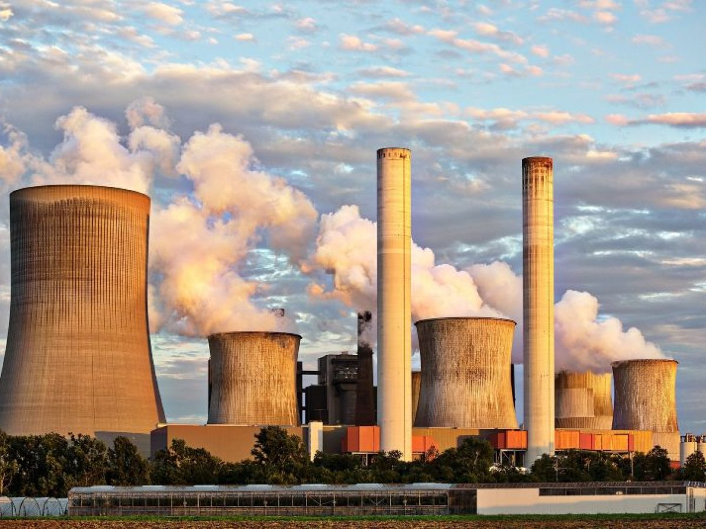
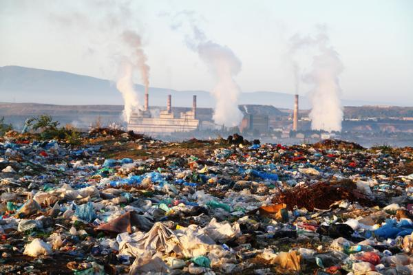

El agotamiento de los recursos naturales se produce cuando estos son consumidos de una forma tan rápida que la naturaleza no tiene la capacidad ni el tiempo para asegurar su regeneración.Existen dos grandes causas que provocan esta sobreexplotación y agotamiento de recursos.Por un lado, el crecimiento de la población, que requiere cada vez mayores recursos para satisfacer sus necesidades. Por otro, la actividad económica humana, cuya forma de llevarla cabo, está en la base del agotamiento de recursos: la extracción expansiva de materia prima pura, la deforestación, la contaminación y, también, el cambio climático y sus efectos sobre una mayor regularidad e intensidad de catástrofes naturales.
Los aparatos domésticos de combustión, los vehículos de motor, las instalaciones industriales y los incendios forestales son fuentes habituales de contaminación de aire. Los contaminantes más preocupantes para la salud pública son las partículas en suspensión, el monóxido de carbono, el ozono, el dióxido de nitrógeno y el dióxido de azufre. La contaminación del aire exterior y de interiores provoca enfermedades respiratorias y de otros tipos y es una de las principales causas de morbimortalidad.
La calidad del aire está estrechamente relacionada con el clima del planeta y los ecosistemas de todo el mundo. Muchas de las fuentes de contaminación atmosférica (por ejemplo, la quema de combustibles fósiles) emiten también gases de efecto invernadero. Por consiguiente, las políticas orientadas a reducir la contaminación del aire son una estrategia beneficiosa para el clima y la salud, pues reducen la carga de morbilidad y ayudan a mitigar el cambio climático a corto y largo plazo.
 Inicio Continuar